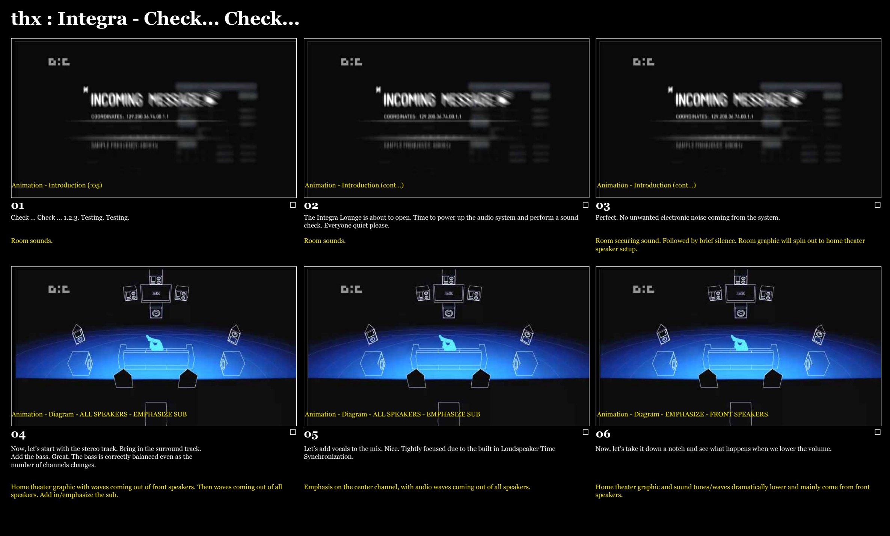
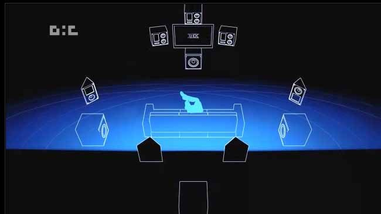

THX × Integra
Animated presentation content for THX and Integra explaining THX certification of Integra's home theater products.

The problem
The brief listed a thematic countdown animation (:05–:10), five diagram animations (:10–:15) and 10–15 still slides, delivered as one Keynote deck without audio, to present Integra's THX Certified products.
The approach
The storyboard, titled "Check... Check...", opens on an "Incoming Message" countdown sequence, then moves into a top-down home theater diagram: a sofa on a blue floor surrounded by outlined speakers, with individual speakers and sound waves emphasised in turn as the script steps through surround speakers, the subwoofer, the center channel and front speakers.
Later frames shift to product: an Integra receiver under the line "Only top performing products have what it takes to be THX Certified," an Integra end card reading "Inspired by passion, driven by excellence," and a closing THX logo.

Leadership
Directed the studio's work on the piece, from storyboard and script frames through the animation deliverables.